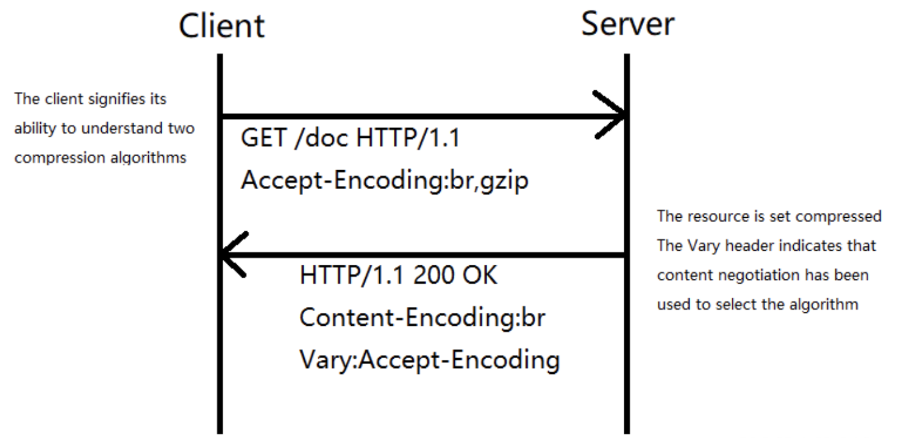

HTTP压缩的原理与实践
压缩是提升HTTP服务的重要方式，压缩之后内容具备更小的体积，从而减小传输时间。
所有的现代浏览器以及服务器都支持压缩技术，唯一需要协商的是所采用的压缩算法。为了选择采用的压缩算法，HTTP客户端和服务器之间会使用主动协商机制。
- HTTP客户端发送 Accept-Encoding 首部，（其中包含它所支持的压缩算法，以及各自的优先级）
- 服务器则从中选择一种，使用该算法对响应的消息主体进行压缩，并且发送 Content-Encoding 首部来告知HTTP客户端它选择了哪一种算法。
图：压缩流程
流行的无损压缩算法基本都依赖于 LZ77 和 Huffman 编码，所以在进入 gzip 或 Brotli等具体的压缩应用之前对这两种技术有基本的了解非常重要。
LZ77
LZ77压缩算法采用字典的方式进行压缩，是一个简单但十分高效的数据压缩算法。其方式就是把数据中一些可以组织成短语(最长字符)的字符加入字典，然后再有相同字符出现采用标记来代替字典中的短语，如此通过标记代替多数重复出现的方式以进行压缩。
使用LZ77进行编码之后，用霍夫曼编码进一步压缩。
霍夫曼编码
霍夫曼编码是另一种无损压缩算法，可以压缩图像、音频、文本。
让我们来看下方的字符串：
A DEAD DAD CEDED A BAD BABE A BEADED ABACA BED
这里一共有46个字符，每个字符占8byte，所以一共有368byte。如果我们使用霍夫曼编码的话，可以将这368个比特压缩到115byte。 在上面的字符串中，如果我们使用等长编码（Equal Length Code），将每个字符设计成长度为3的二进制编码，将会得到463=138byte，但等长编码一个弊端，所有字符的长度相同会导致编码过长。所以又出现了*变长编码（Variable Length Code）。变长编码的引入也带来一个问题：二进制编码中，只有0和1，如果每个字符的位数不固定，则很难确定从哪里开始，以及到哪里停止，这就很容易产生歧义。
霍夫曼编码的出现解决了上面的问题：其基本策略是出现频率高的字符使用较短的编码，出现频率低的字符则使用较长的编码。霍夫曼编码使用前缀码（Prefix code）解决了前述的歧义问题。
这种方式通过构建霍夫曼树（Huffman tree）来完成。
一开始所有节点都是叶子节点，包含一个字符和对应的权重——代表字符在整个字符串中出现的频率。出现频率最高的字符，距离树的根节点最近。两个最小权重的节点创建一个新节点，新节点的权重为其子节点的权重之和，然后我们再在这个新节点和剩余节点上应用此过程，直到剩下最后一个节点，而这就是霍夫曼树的根节点。
我们从根节点开始，然后沿着霍夫曼树像要编码的字符前进。如果走了左侧路径，则标记为 0，走了右侧路径，我们则标记为 1。
这样就完成了整个霍夫曼树的构建。整个字符串编码后的结果如下图所示。最终需要消耗115byte，比368比特整整少了253byte，比138byte少了23byte。
图：Huffman编码原理

在HTTP服务中应用Brotli
Brotli 是 Google 推出的开源无损压缩算法, 通过变种的 LZ77 算法、Huffman 编码以及二阶文本建模等方式进行数据压缩，与其他压缩算法相比，它有着更高的压缩效率，性能也比我们目前常见的 Gzip 高17-25%，侧重于HTTP压缩，可以帮我们高效的压缩网页中的各类文件。
与常见的通用压缩算法不同，Brotli使用一个预定义的120千字节字典。该字典包含超过13000个常用单词、短语和其他子字符串，这些来自一个文本和HTML文档的大型语料库。 在这种预定义字典下，在LZ77压缩中字典中的一个词会作为一个整体被匹配，这种方式可以大大提升较小文件的压缩密度。
LinkedIn对一个JavaScript文件进行的压缩率对比，测试结果表明用Brotli压缩的 Javascript 文件比 Gzip 至少提升15％左右，
图：Brotli压缩效果对比

各压缩算法压缩等级与效率
| Algorithm | Quality | Compression Time (ms) | Decompression Time (ms） |
|---|---|---|---|
| gzip | 6 | 169 | 35 |
| gzip | 9 | 284 | 27 |
| zopfli | 15 | 37,847 | 32 |
| zopfli | 100 | 194,460 | 38 |
| zopfli | 1000 | 1,855,480 | 29 |
| brotli | 4 | 109 | 24 |
| brotli | 5 | 193 | 20 |
| brotli | 9 | 517 | 23 |
| brotli | 11 | 11,913 | 22 |